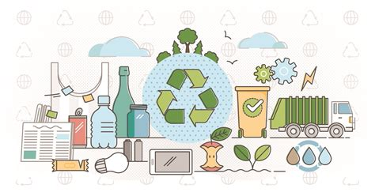

¿Cómo puedes ayudar tú?
Cualquier persona, independientemente de dónde viva, puede tomar medidas concretas para proteger los océanos:
- Reduce el uso de plásticos: Utiliza botellas reutilizables, bolsas de tela y evita envoltorios innecesarios en tu compra diaria.
- Consume pescado de origen sostenible: Elige productos del mar etiquetados con sellos de pesca responsable (como MSC o ASC).
- Participa en limpiezas locales: Únete a jornadas de recogida de residuos en playas, ríos o entornos naturales de tu comunidad.
- Difunde el mensaje: Comparte datos sobre el ODS 14 y sensibiliza a tu entorno sobre la importancia de la conservación marina.

Únete a Océanos Vivos
Escríbenos a contacto@oceanosvivos-ejemplo.org para hacerte voluntario o colaborar en nuestras próximas campañas.